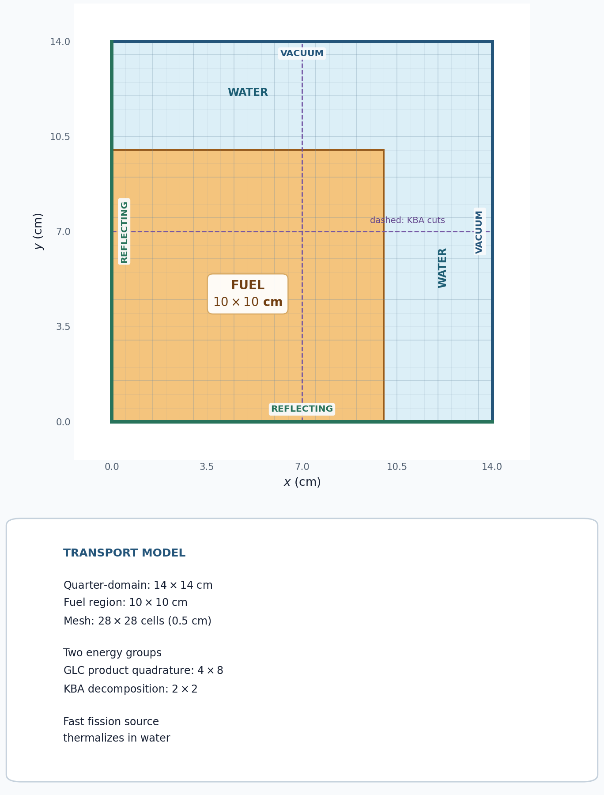
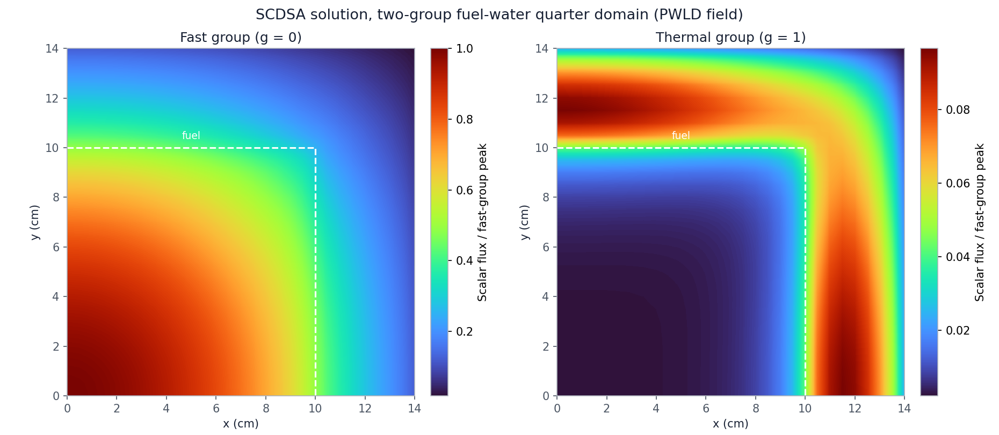

5.3.3. SCDSA: Spatially Consistent Diffusion Synthetic Acceleration

This tutorial compares ordinary, unaccelerated power iteration with the same two-group eigenvalue calculation using Spatially Consistent Diffusion Synthetic Acceleration (SCDSA).
5.3.3.1. Why a fuel-water problem?
SCDSA accelerates power iteration, so it requires a multiplying system rather than a nonfissile graphite block. A heterogeneous fuel–water problem is a useful demonstration: fission neutrons are born in the fast group, water moderates them, and the slowly varying thermal eigenmode is well represented by a diffusion correction.
The model is a 14 cm by 14 cm quarter-domain. Fuel occupies the 10 cm by 10 cm region adjacent to the reflecting left and bottom boundaries; water fills the remaining top and right reflector. The two-group fuel and water cross sections come from test/assets/xs/xs_fuel_g2.xs and test/assets/xs/xs_water_g2.xs in the regression suite. The outer boundaries are vacuum.
[ ]:
from pathlib import Path
from mpi4py import MPI
from pyopensn.aquad import GLCProductQuadrature2DXY
from pyopensn.context import Finalize
from pyopensn.logvol import RPPLogicalVolume
from pyopensn.mesh import KBAGraphPartitioner, OrthogonalMeshGenerator
from pyopensn.solver import (
DiscreteOrdinatesProblem,
PowerIterationKEigenSolver,
SCDSAAcceleration,
)
from pyopensn.xs import MultiGroupXS
comm = MPI.COMM_WORLD
rank = comm.rank
tutorial_dir = Path(__file__).resolve().parent if "__file__" in globals() else Path.cwd()
repo_root = next(
path for path in (tutorial_dir, *tutorial_dir.parents)
if (path / "test/assets/xs").is_dir()
)
5.3.3.2. Build the transport problem
The mesh uses a 2 by 2 KBA partition and the generated script should be run with four MPI processes. SCDSA currently requires all energy groups to be in one groupset. The groupset contains no WGDSA, TGDSA, or other DSA options. The transport problem is rebuilt for each solve so both cases begin from the same state.
[ ]:
def load_xs(filename):
xs = MultiGroupXS()
xs.LoadFromOpenSn(str(repo_root / "test/assets/xs" / filename))
return xs
def make_problem():
nodes = [0.5 * i for i in range(29)]
partitioner = KBAGraphPartitioner(
nx=2, ny=2, xcuts=[7.0], ycuts=[7.0]
)
mesh = OrthogonalMeshGenerator(
node_sets=[nodes, nodes], partitioner=partitioner
).Execute()
mesh.SetOrthogonalBoundaries()
mesh.SetUniformBlockID(0)
fuel_region = RPPLogicalVolume(
xmin=-1.0, xmax=10.0, ymin=-1.0, ymax=10.0, infz=True
)
mesh.SetBlockIDFromLogicalVolume(fuel_region, 1, True)
quadrature = GLCProductQuadrature2DXY(
n_polar=4, n_azimuthal=8, scattering_order=1
)
return DiscreteOrdinatesProblem(
mesh=mesh,
num_groups=2,
groupsets=[
{
"groups_from_to": (0, 1),
"angular_quadrature": quadrature,
"inner_linear_method": "petsc_richardson",
"l_max_its": 2,
"l_abs_tol": 1.0e-10,
}
],
xs_map=[
{"block_ids": [0], "xs": load_xs("xs_water_g2.xs")},
{"block_ids": [1], "xs": load_xs("xs_fuel_g2.xs")},
],
boundary_conditions=[
{"name": "xmin", "type": "reflecting"},
{"name": "ymin", "type": "reflecting"},
{"name": "xmax", "type": "vacuum"},
{"name": "ymax", "type": "vacuum"},
],
options={
"save_angular_flux": True,
"verbose_inner_iterations": False,
"verbose_outer_iterations": False,
},
)
5.3.3.3. Compare power iteration and SCDSA
The baseline passes no acceleration object to the power-iteration solver. The second case changes only this setting by passing an SCDSAAcceleration object with a piecewise-linear discontinuous diffusion discretization. We record \(k_{\mathrm{eff}}\), completed power iterations, and transport sweeps. Wall time is split into three phases, each the maximum across ranks: model setup (mesh, cross sections, transport problem, and solver objects), solver initialization, and the power iterations
themselves. SCDSA assembles its diffusion operator when the solve starts, so that cost falls in the power-iteration phase.
[ ]:
def solve(use_scdsa):
comm.Barrier()
start = MPI.Wtime()
problem = make_problem()
solver_options = {
"problem": problem,
"k_tol": 1.0e-8,
"max_iters": 300,
}
if use_scdsa:
solver_options["acceleration"] = SCDSAAcceleration(
problem=problem,
sdm="pwld",
l_abs_tol=1.0e-10,
max_iters=100,
pi_max_its=50,
pi_k_tol=1.0e-10,
)
solver = PowerIterationKEigenSolver(**solver_options)
comm.Barrier()
model_done = MPI.Wtime()
solver.Initialize()
comm.Barrier()
init_done = MPI.Wtime()
solver.Execute()
comm.Barrier()
end = MPI.Wtime()
times = [
comm.allreduce(t, op=MPI.MAX)
for t in (model_done - start, init_done - model_done, end - init_done)
]
return (
problem,
solver.GetEigenvalue(),
solver.GetNumPowerIterations(),
solver.GetNumSweeps(),
times,
)
_, unaccelerated_k, unaccelerated_iterations, unaccelerated_sweeps, unaccelerated_times = (
solve(False)
)
scdsa_problem, scdsa_k, scdsa_iterations, scdsa_sweeps, scdsa_times = (
solve(True)
)
5.3.3.4. Interpret the metrics
Agreement in \(k_{\mathrm{eff}}\) is the correctness check. Power iterations and transport sweeps measure convergence work; lower values indicate that SCDSA is removing the slowly converging eigenmode. Wall time is included for context but is not regression-tested because it depends on the machine. Reporting the setup and iteration phases separately shows where the time goes and isolates the cost and benefit of the acceleration itself.
[ ]:
k_difference = abs(scdsa_k - unaccelerated_k)
unaccelerated_iteration_time = unaccelerated_times[2]
scdsa_iteration_time = scdsa_times[2]
iteration_speedup = unaccelerated_iteration_time / scdsa_iteration_time
total_speedup = sum(unaccelerated_times) / sum(scdsa_times)
if rank == 0:
print(f"Unaccelerated k-effective={unaccelerated_k:.12e}")
print(f"SCDSA k-effective={scdsa_k:.12e}")
print(f"SCDSA k-effective difference={k_difference:.12e}")
print(f"Unaccelerated power iteration count={unaccelerated_iterations}")
print(f"SCDSA power iteration count={scdsa_iterations}")
print(f"Unaccelerated sweeps={unaccelerated_sweeps}")
print(f"SCDSA sweeps={scdsa_sweeps}")
for name, times in (("Unaccelerated", unaccelerated_times), ("SCDSA", scdsa_times)):
print(f"{name} model setup time (s)={times[0]:.6f}")
print(f"{name} solver initialization time (s)={times[1]:.6f}")
print(f"{name} power iteration time (s)={times[2]:.6f}")
print(f"{name} total wall time (s)={sum(times):.6f}")
print(f"Unaccelerated time per power iteration (s)="
f"{unaccelerated_iteration_time / unaccelerated_iterations:.6f}")
print(f"SCDSA time per power iteration (s)={scdsa_iteration_time / scdsa_iterations:.6f}")
print(f"SCDSA power iteration speedup={iteration_speedup:.6f}")
print(f"SCDSA total speedup={total_speedup:.6f}")
assert k_difference < 1.0e-6
assert scdsa_iterations < unaccelerated_iterations
assert scdsa_sweeps < unaccelerated_sweeps
A representative four-process run gives the following eigenvalue comparison:
Solve |
\(k_{\mathrm{eff}}\) |
|---|---|
No acceleration |
0.59638191 |
SCDSA |
0.59638194 |
The convergence work is deterministic for this configuration:
Solve |
Power iterations |
Transport sweeps |
|---|---|---|
No acceleration |
97 |
485 |
SCDSA |
16 |
96 |
Each unaccelerated power iteration performs five transport sweeps. SCDSA performs six, because it follows the groupset solve with one extra sweep.
The wall-time breakdown below is the median of repeated four-process runs: five for SCDSA and ten for the unaccelerated baseline, which is shared with the CMFD tutorial:
Solve |
Model setup (s) |
Solver initialization (s) |
Power iterations (s) |
Total (s) |
Time per power iteration (ms) |
|---|---|---|---|---|---|
No acceleration |
0.015 |
<0.001 |
0.714 |
0.730 |
7.4 |
SCDSA |
0.018 |
<0.001 |
0.478 |
0.496 |
29.9 |
The eigenvalues differ by about \(3.1\times10^{-8}\), below the \(10^{-6}\) comparison tolerance, and SCDSA uses about 84% fewer power iterations and 80% fewer transport sweeps.
Setup is a small part of either run. Building the model takes about 0.02 s in both cases, 2–4% of the total, and solver initialization is negligible. The wall times are close for a different reason: each SCDSA power iteration costs about 4.1 times as much as an unaccelerated one. At about 1.5 ms per sweep, SCDSA’s 96 sweeps take about \(96\times1.5\) ms \(\approx0.14\) s, so the remaining \(\approx0.34\) s, about 70% of the iteration time, is the diffusion work: assembling the
diffusion operator when the solve starts and, every outer iteration, up to 50 inner diffusion power iterations (pi_max_its) to a tight tolerance (pi_k_tol). The net speedup is 1.49 for the power iterations and 1.47 overall.
On this small 784-cell, 16-angle problem a sweep is cheap, so the diffusion work costs nearly as much as the sweeps it saves. Sweep cost grows with the number of angles while the diffusion correction does not, so the 5-fold sweep reduction translates more directly into wall time for higher-order quadratures. Wall times are machine-dependent; the iteration and sweep counts are not.
5.3.3.5. Export and visualize the scalar flux
The converged eigenvalues agree, so the SCDSA solution is used as the representative flux field. The following code exports both group scalar fluxes to VTK. It remains in Markdown so regression tests do not create output files.
from pyopensn.fieldfunc import FieldFunctionGridBased
fast_flux, thermal_flux = scdsa_problem.GetScalarFluxFieldFunction()
FieldFunctionGridBased.ExportMultipleToPVTU(
[fast_flux, thermal_flux], "Flux/SCDSA_Flux"
)

Fast-group (left) and thermal-group (right) scalar flux from the SCDSA solve, both normalized to the fast-group peak. Each 0.5 cm cell is drawn with its piecewise-linear discontinuous (PWLD) solution, the bilinear field defined by the cell’s four nodal values. The dashed line marks the fuel region. Fast neutrons are born in the fuel and peak at the reflecting corner, while the thermal flux peaks in the water reflector, where fast neutrons are moderated, and is depressed inside the absorbing fuel.
5.3.3.6. Finalize (for Jupyter Notebook only)
In script mode, PyOpenSn handles finalization automatically. In a Jupyter kernel, finalize OpenSn before MPI.
[ ]:
if "opensn_console" not in globals():
from IPython import get_ipython
if get_ipython() is not None:
Finalize()
MPI.Finalize()